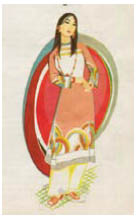

Những giọng nói thật kinh khủng. Chúng cãi nhau. Gào thét. Khóc lóc. Chúng chờ đợi sau mỗi cánh cửa, và Cáo đi lạc từ căn phòng này sang căn phòng khác, từ đại sảnh này đến đại sảnh khác, tìm thấy vàng và bạc, chiến lợi phẩm chất thành đống nhiều không đếm xuể từ những thành phố bị cướp bóc, những rương đầy quần áo đắt tiền, những chiếc đĩa vàng trên mặt bàn trống trơn trong một thoáng gợi cô nhớ đến phòng ăn của tên yêu râu xanh, những chiếc giường với màn trưởng đỏ màu máu, những đồ nội thất khảm đá quý... Ánh sáng trên cây nến của cô kéo chúng ra khỏi bóng tối như những hình ảnh không thực, và tất cả những vẻ tráng lệ này thì thầm nói lên sự điên loạn của Guismund. Toàn bộ lâu đài là một bóng ma. Tất cả những giọng nói, những nỗi khát khao tội lỗi... Tất cả những sự sống bị bóp chết, dù không muốn phải chết.
Ánh nến rung rinh soi sáng một thư phòng. Những quyển sách. Những tấm bản đồ. Một quả địa cầu. Trên sàn nhà trải bộ lông đen của một con sư tử, bức tranh thảm treo tường cho thấy nó có thể bay được.
Ngọn nến tắt ngấm.
Cáo cảm thấy tim mình đập nhanh hơn.
Anh ấy đã tìm ra nó.
Jacob đã tìm ra chiếc nỏ thần.
Cô biến hình. Cáo cái có thể chạy đến chỗ anh nhanh hơn.
Jacob sẽ sống.
Mọi sự đều tốt đẹp.